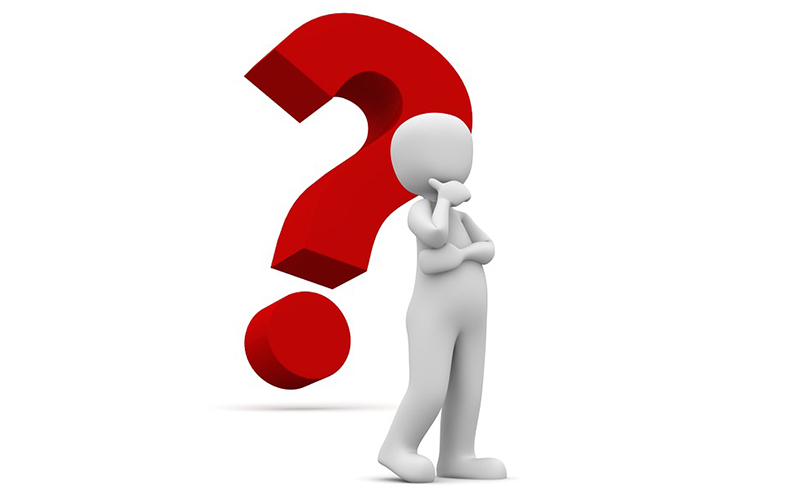

¿QUIÉNES SOMOS?
Un texto es una composición de signos codificados en un sistema de escritura que forma una unidad de sentido. También es una composición de caracteres imprimibles (con grafema) generados por un algoritmo de cifrado que, aunque no tienen sentido para cualquier persona, sí puede ser descifrado por su destinatario original. En otras palabras, un texto es un entramado de signos con una intención comunicativa que adquiere sentido en determinado contexto. Más información...

DONACIÓN DE LIBROS
Las ideas que comunica un texto están contenidas en lo que se suele denominar «macroproposiciones», unidades estructurales de nivel superior o global, que otorgan coherencia al texto constituyendo su hilo central, el esqueleto estructural que cohesiona elementos lingüísticos formales de alto nivel, como los títulos y subtítulos, la secuencia de párrafos, etc. En contraste, las «microproposiciones» son los elementos coadyuvantes de la cohesión de un texto, pero a nivel más particular o local. Esta distinción fue realizada por Teun van Dijk en 1980. Más información...

INFORMACIÓN
Un texto es una composición de signos codificados en un sistema de escritura que forma una unidad de sentido. También es una composición de caracteres imprimibles (con grafema) generados por un algoritmo de cifrado que, aunque no tienen sentido para cualquier persona, sí puede ser descifrado por su destinatario original. En otras palabras, un texto es un entramado de signos con una intención comunicativa que adquiere sentido en determinado contexto. Más información...
